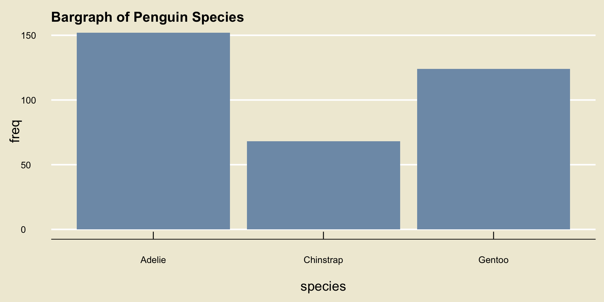
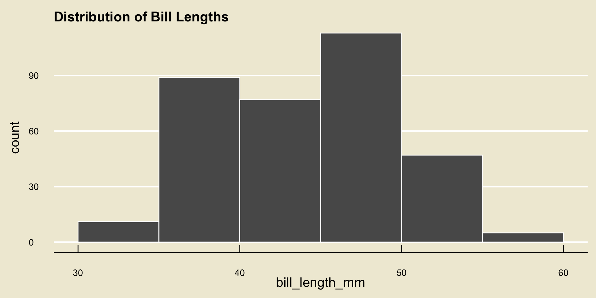
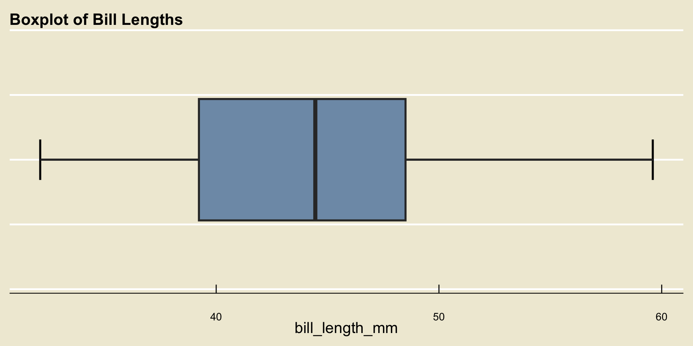

species island bill_length_mm bill_depth_mm flipper_length_mm body_mass_g
1 Adelie Torgersen 39.1 18.7 181 3750
2 Adelie Torgersen 39.5 17.4 186 3800
3 Adelie Torgersen 40.3 18 195 3250
4 Adelie Torgersen NA NA NA NA
5 Adelie Torgersen 36.7 19.3 193 3450
6 Adelie Torgersen 39.3 20.6 190 3650
7 Adelie Torgersen 38.9 17.8 181 3625
8 Adelie Torgersen 39.2 19.6 195 4675
9 Adelie Torgersen 34.1 18.1 193 3475
10 Adelie Torgersen 42 20.2 190 4250
# ℹ 334 more rows
# ℹ 2 more variables: sex <fct>, year <int>PSTAT 5A: Midterm 1 Review
Overview of Weeks 1 and 2
Ethan P. Marzban
2023-07-05
Descriptive Statistics
Structure of Data
- We started by talking about the structure of data.
- We were exposed to the notion of a data matrix, which is comprised of a series of observational units (i.e. rows) on a series of variables (i.e. columns)
- For instance, the
palmerpenguinsdata matrix is:
Structure of Data
- Of course, the reader is not expected to a priori know what the variables in a dataset represent; as such, most datasets come equipped with a data dictionary that lists out the variables included in the dataset along with a brief description of each.
| Variable | Description |
|---|---|
species |
The species of penguin (either Adelie, Chinstrap, or Gentoo) |
island |
The island on which the penguin was found (either Biscoe, Dream, or Torgersen) |
bill_length_mm |
The length (millimeters) of the penguin’s bill |
bill_depth_mm |
The depth (in millimeters) of the penguin’s bill |
flipper_length_mm |
The length (in millimeters) of the penguin’s flipper |
body_mass_g |
The mass (in grams) of the penguin |
sex |
The sex of the penguin (either Male or Female) |
year |
The year in which the penguin was observed |
Classification of Variables
- We also saw that variables fall into two main types: numerical and categorical.
- Remember that it is not enough to simply check whether our data is comprised of numbers, as categorical data can be encoded using numbers (e.g. months in a year).
- Rather, we should check whether it makes interpretable sense to add two elements in our variable (e.g.
1+2is3, whereasJan+Febis notMarch).
Classification of Variables
Within numerical data, we have a further subdivision into discrete and continuous variables.
- The set of possible values of a discrete variable has jumps, whereas the set possible values of a continuous variable has no jumps.
Within categorical data, we have a further subdivision into ordinal and nominal variables.
- Ordinal variables have a natural ordering (e.g. letter grades, months of the year, etc.) whereas nominal variables do not (e.g. favorite color)
Full Classification Scheme
Visualization
Once we have classified a variable as being either numerical or categorical, we can ask ourselves: how can we best visualize this variable?
For categorical data, we use a bargraph and for numerical data we use either a histogram or a boxplot.
Bargraph
Histogram
- Remember the importance of binwidth: demo
Boxplot
- Remember that the whiskers are never allowed to extend beyond 1.5 times the IQR (and recall that the IQR is just the width of the box).
Numerical Summaries
- We can also produce numerical summaries of numerical variables.
- Measures of Central Tendency are different quantities that summarize the “center” of a variable
- There are two main measures of central tendency we discussed: the mean and the median.
The Mean
- The mean (or arithmetic mean) is a sort of “balancing point”:

\[ \overline{x} = \frac{1}{n} \sum_{i=1}^{n} x_i \]
- Also recall our discussion on data aggregation, and how the incorporation of new data changes the mean.
Spread
Another way we could summarize a numerical dataset (i.e. a dataset containing only one variable, one that is numerical) is to describe how “spread out” the values are.
The variance is a sort of “average distance of points to the mean”:

\[ s_x^2 = \frac{1}{n - 1} \sum_{i=1}^{n} (x_i - \overline{x})^2 \]
- The standard deviation is just the square root of the variance
Spread
The interquartile range (IQR) is another measure of spread: \[ \mathrm{IQR} = Q_3 - Q_1 \] where \(Q_1\) and \(Q_3\) denote the first and third quartiles, respectively.
Recall that the \(p\)th percentile of a dataset \(X\) is the value \(\pi_{x, \ 0.5}\) such that p% of observations lie to the left of (i.e. are less than) \(\pi_{x, \ 0.5}\).
\(Q_1\) is the 25th percentile and \(Q_3\) is the 75th percentile
The third measure of spread we discussed is the range: \[ \mathrm{range}(X) = \max\{x_1, \cdots, x_n\} - \min\{x_1, \ \cdots, \ x_n\} \]
5-Number Summary
Recall the five number summary, which contains:
- The minimum
- The first quartile
- The median
- The third quartile
- The maximum
Also recall how all of these quantities appear on a boxplot!
Comparisons of Variables
- If we want to compare two variables, there are three cases to consider:
- Numerical vs. Numerical
- Numerical vs. Categorical
- Categorical vs. Categorical
- When comparing two numerical variables, we use a scatterplot
- When comparing a numerical variable to a categorical variable, we use a side-by-side boxplot
- When comparing two categorical variables, we construct a contingency table
- Linear Negative Trend:

- Nonlinear Negative Trend:

- Nonlinear Positive Trend:

- No Discernable Trend

Probability
Basics of Probability
- Probability is, in many ways, the language of uncertainty.
- An experiment is any procedure we can repeat an infinite number of times, where each time we repeat the procedure the same fixed set of “things” can occur
- These “things” are called outcomes
- The outcome space, denoted \(\Omega\), is the set containing all outcomes associated with a particular experiment.
- Events are just subset of the outcome space.
- We can express outcome spaces using tables or trees.
Probability
- Probability is a function that acts on events
- Notationally: \(\mathbb{P}(E)\)
- There are two main approaches to computing probabilities:
- The Classical Aproach: if outcomes are equally likely, then for any event \(E\) \[ \mathbb{P}(E) = \frac{\#(E)}{\#(\Omega)} \]
- The long-run [relative] frequency approach: repeat the experiment an infinite number of times and define \(\mathbb{P}(E)\) to be the proportion of times \(E\) occurs
Long-Run Frequencies Example
| Toss | 1 | 2 | 3 | 4 | 5 | 6 | 7 | 8 | 9 | 10 |
|---|---|---|---|---|---|---|---|---|---|---|
| Outcome | H |
T |
T |
H |
T |
H |
H |
H |
T |
T |
Raw freq. of H |
1 | 1 | 1 | 2 | 2 | 3 | 4 | 5 | 5 | 5 |
Rel. freq of H |
1/1 | 1/2 | 1/3 | 2/4 | 2/5 | 3/6 | 4/7 | 5/8 | 5/9 | 5/10 |
Set Operations
- Given two events \(E\) and \(F\), there are several operations we can perform:
- Complement: \(E^\complement\); denotes “not \(E\)”
- Union: \(E \cup F\); denotes \(E\) or \(F\) (or both)
- Intersection: \(E \cap F\); denotes \(E\) and \(F\)
Venn Diagrams

\(A^\complement\)
(complement)

\(A \cap B\)
(intersection)

\(A \cup B\)
(union)
Axioms of Probability
\(\mathbb{P}(E) \geq 0\) for any event \(E\)
\(\mathbb{P}(\Omega) = 1\)
For disjoint events \(E\) and \(F\) (i.e. for \(E \cap F = \varnothing\)), \(\mathbb{P}(E \cup F) = \mathbb{P}(E) + \mathbb{P}(F)\)
Probability Rules
Probability of the Empty Set: \(\mathbb{P}(\varnothing) = 0\)
Complement Rule: \(\mathbb{P}(E^\complement) = 1 - \mathbb{P}(E)\)
Addition Rule: \(\mathbb{P}(E \cup F) = \mathbb{P}(E) + \mathbb{P}(F) - \mathbb{P}(E \cap F)\)
Conditional Probabilities
\(\mathbb{P}(E \mid F)\) denotes an “updating” of our beliefs on \(E\) in the presence of \(F\))
- Definition: \(\displaystyle \mathbb{P}(E \mid F) = \frac{\mathbb{P}(E \cap F)}{\mathbb{P}(F)}\), provided \(\mathbb{P}(F) \neq 0\)
Multiplication Rule: \(\mathbb{P}(E \cap F) = \mathbb{P}(E \mid F) \cdot \mathbb{P}(F) = \mathbb{P}(F \mid E) \cdot \mathbb{P}(E)\)
Bayes’ Rule: \(\displaystyle \mathbb{P}(E \mid F) = \frac{\mathbb{P}(F \mid E) \cdot \mathbb{P}(E)}{\mathbb{P}(F)}\)
Law of Total Probability: \(\mathbb{P}(F) = \mathbb{P}(F \mid E) \cdot \mathbb{P}(E) + \mathbb{P}(F \mid E^\complement) \cdot \mathbb{P}(E^\complement)\)
Independence
- Independence asserts that \(\mathbb{P}(E \mid F) = \mathbb{P}(E)\), which in turn implies \(\mathbb{P}(F \mid E) = \mathbb{P}(F)\) and \(\mathbb{P}(E \cap F) = \mathbb{P}(E) \cdot \mathbb{P}(F)\)
- Note that \(\mathbb{P}(E \cap F) = \mathbb{P}(E) \cdot \mathbb{P}(F)\) only when \(E\) and \(F\) are independent! Otherwise, you have to compute \(\mathbb{P}(E \cap F)\) using the multiplication rule.
- The interpretation of independence is that the two events “do not affect each other”
Counting
- Don’t forget about counting!
Programming
Basics of Programming
Recall that, in this class, we use Python as our main computing language
- We run Python in Jupyter Notebooks
There are a few data types we have encountered thus far:
str, for “string”int, for “integer”float, aka “real number with decimals”bool, for “boolean”
Basics of Programming
There are also certain data classes we have encountered, which are effectively various python objects aggregated into a larger structure. These include:
- Tables
- Lists
- Arrays
We can use indexing to extract certain pieces of data classes; e.g. for a list
x,x[i]returns the (i+ 1)th element ofx.- Remember that Python starts indexing at zero!
Comparisons and Conditionals
- Take a look at lab 2.
Functions
I’d also like to take a minute to talk about functions in Python.
Python functions behave much like mathematical functions: they take in some number of arguments (i.e. inputs) and can output a variety of things.
For example, the
type()function returns either the data type or data structure of a single input.There is some language we use when dealing with functions in programming: when we pass the argument
xinto the functionf(), we say that we have “called” the functionf()on the argument/inputx. The objectf(x)is called a function call.
Functions
- To create a user-defined function
function_name(), we use the following structure:
By the way, when writing skeleton code like the above (i.e. a chunk of code that mimics the structure/format of an actual piece of code, but isn’t fully filled in), programmers often use the symbols
<and>to denote text. These symbols should not be included in your actual code.- For example, we would not actually enclose our arguments in
<and>’s; we would simply write out the arguments. We’ll see an example of this in a minute
- For example, we would not actually enclose our arguments in
Exercise
Exercise
Write a function is_mult_of_three() that takes in a single input x and outputs True if x is a multiple of three and False if not. Additionally, the function should return "Error: input must be numeric" if the argument x that is provided is not numerical.
- Take a moment to open up our JupyterHub server instance, and try writing out the function on your own. Then we’ll work through it together (please note that solutions to this won’t be provided, so make sure you take notes!)